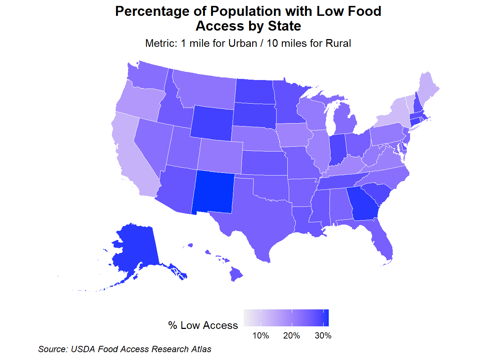
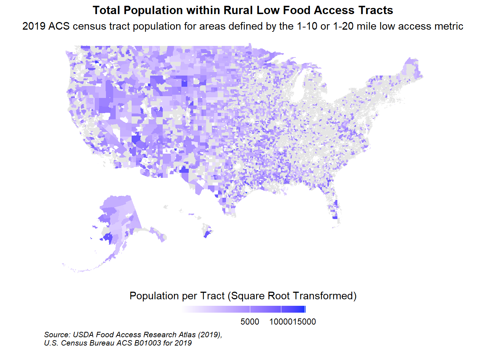
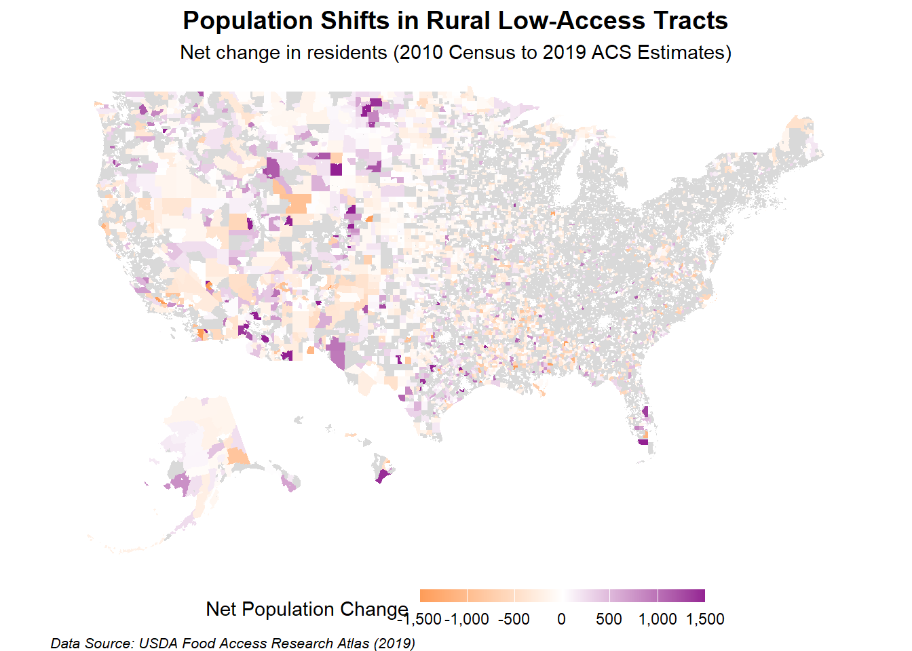
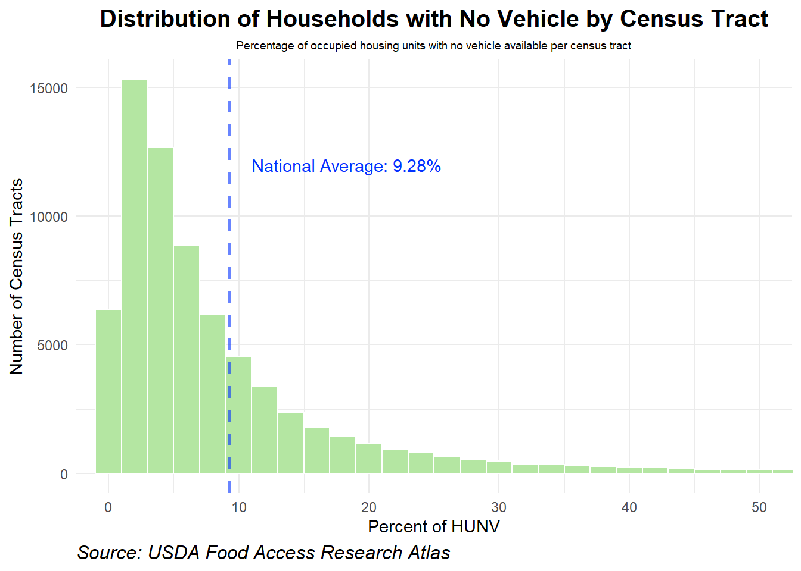
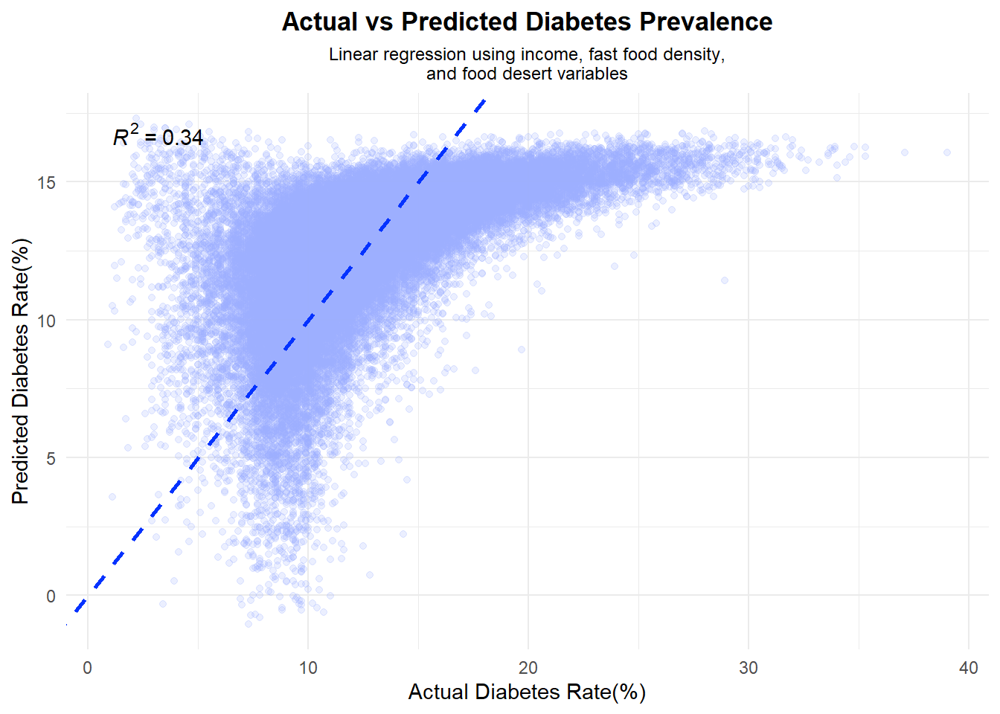
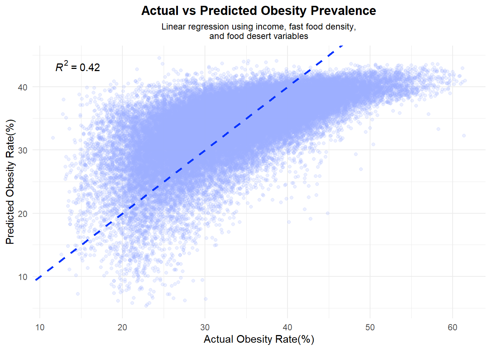
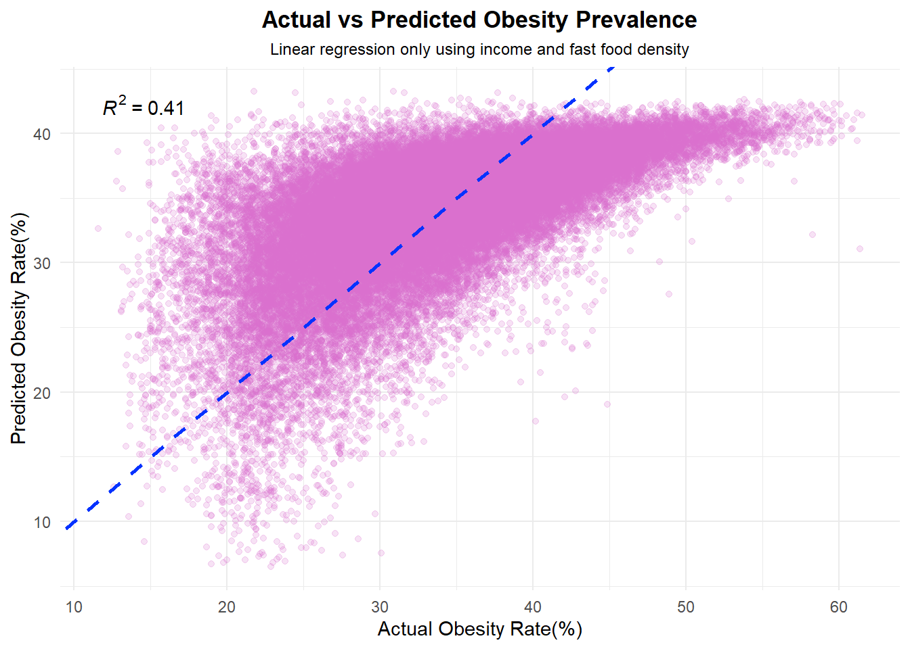

Individual Report: How does Supermarket Accessibility Vary Across the United States?
Executive Summary
This analysis addresses a primary research question: How does supermarket accessibility vary across the United States? This work is one component of a larger collaborative analysis investigating whether “food deserts” are linked to chronic health outcomes, such as diabetes. While my teammates analyzed income levels, fast-food density, and health statistics to build a comprehensive Linear Regression model, my focus is on the spatial distribution of low food access.
By integrating the USDA Food Access Research Atlas with the ACS 2019 Population Dataset, I map and analyze where the physical distance to quality food is most significant. Finally, I run a logistic regression model to evaluate how effectively socioeconomic factors such as poverty levels, SNAP enrollment, and household vehicle access, can predict whether a census tract is classified as ‘Low Access.’ This statistical approach allows me to move beyond simple mapping and quantify which factors most significantly influence food insecurity in the U.S.
Technical Setup
Before importing the datasets, I initiated a standardized workflow by creating a dedicated data directory (if one did not already exist), loading the necessary R libraries, and defining custom functions for title formatting and data cleaning. This ensures the analysis is both reproducible and organized.
The USDA recognizes that food accessibility is a complex issue influenced by factors like public transportation, household income, and vehicle availability. To account for these variables, the FARA defines “Low Access” based on the physical distance to the nearest supermarket. Specifically, a census tract is flagged if at least 500 people, or 33% of the population, live beyond the following thresholds:
Half-and-10: Residents are more than 0.5 miles (Urban) or 10 miles (Rural) from a supermarket.
1-and-10: Residents are more than 1 mile (Urban) or 10 miles (Rural) from a supermarket.
1-and-20: Residents are more than 1 mile (Urban) or 20 miles (Rural) from a supermarket.
The dataset offers two primary lenses: “Low Income and Low Access” (LILA) and general “Low Access.” For this analysis, I focus exclusively on Low Access. By removing the income constraint from the primary metric, I maintain better control over the variables and isolate the relationship between geography and infrastructure for more accurate findings.
The USDA releases the FARA around every five years, with the most recent being the 2019 FARA. This Atlas aggregated 2019 supermarket data, 2018 ACS 5-year estimates, and 2010 US Census population data. Because of this cycle, my analysis represents a specific “snapshot” in time which is essential to keep in mind as we interpret the results.
Downloading Dataset
This code downloads and unzips the static file that the USDA offers only if not found locally.
Code
FOOD_FILENAME <-file.path("data", "final", "2019 Food Access Research Atlas Data.zip")if(!file.exists(FOOD_FILENAME)){download.file("https://ers.usda.gov/sites/default/files/_laserfiche/DataFiles/80591/2019%20Food%20Access%20Research%20Atlas%20Data.zip", destfile=FOOD_FILENAME)}if(!file.exists(FOOD_FILENAME)){unzip(FOOD_FILENAME, exdir =file.path("data", "final"))}FOOD_ATLAS_FILENAME <-file.path("data", "final", "Food Access Research Atlas.csv")
The following steps were taken to prepare the FARA data:
Column Selection: only selected the necessary 16 columns from the original 47 to create a more focused workspace.
GEOID Standardization: The CensusTract column is standardized to the required 11-digit (FIPS) code format. A total of 13,645 tracts are padded with a leading zero to ensure accurate spatial joining with the ACS population data.
Data Type and Missing Value: The Low Access Population count variables (LAPOP1_10, LAPOP05_10, LAPOP1_20) are converted to numeric data types. Additionally, all NA were replaced with 0 values.
FARA Dataset Preview
USDA FARA Variable Dictionary
Urban, Low Income, 1 and 10, Half and 10, and 1 and 20 are dummy variables, where a value of 1 signifies that the census tract meets the stated criteria (Yes), and a value of 0 signifies that it does not (No).
Code
# 1. Create the data frame from your dictionarydictionary_df <-tribble(~`Column Name`, ~Description,"Urban", "Flag for urban census tract.","Low Income", "Flag for low income census tract.","1 and 10", "Flag for low access tract (1 mile for urban, 10 miles for rural).","Half and 10", "Flag for low access tract (1/2 mile for urban, 10 miles for rural).","1 and 20", "Flag for low access tract (1 mile for urban, 20 miles for rural).","Poverty %", "Share of the tract population living with income at or below the Federal poverty thresholds.","OHU2010", "Occupied housing unit count from 2010 census.", "TractHUNV", "Total count of housing units without a vehicle in the tract.","TractSNAP", "Total count of housing units receiving SNAP benefits in the tract.","Pop2010", "Population count from the 2010 census.","Pop 1 and 10", "Population count beyond 1 mile (urban) or 10 miles (rural) from a supermarket.","Pop Half and 10", "Population count beyond 1/2 mile (urban) or 10 miles (rural) from a supermarket.","Pop 1 and 20", "Population count beyond 1 mile (urban) or 20 miles (rural) from a supermarket.")# 2. Use kable to format the table with specified column widthsdictionary_df |>mutate(`Column Name`=cell_spec(`Column Name`, bold =TRUE)) |># Bolds the first columnkable(format ="html", escape =FALSE, # Allows HTML for boldingcol.names =c("Column Name", "Description"),# Set the width of the columns! 20% for the first, 80% for the second.col.widths =c("20%", "80%") )
Column Name
Description
Urban
Flag for urban census tract.
Low Income
Flag for low income census tract.
1 and 10
Flag for low access tract (1 mile for urban, 10 miles for rural).
Half and 10
Flag for low access tract (1/2 mile for urban, 10 miles for rural).
1 and 20
Flag for low access tract (1 mile for urban, 20 miles for rural).
Poverty %
Share of the tract population living with income at or below the Federal poverty thresholds.
OHU2010
Occupied housing unit count from 2010 census.
TractHUNV
Total count of housing units without a vehicle in the tract.
TractSNAP
Total count of housing units receiving SNAP benefits in the tract.
Pop2010
Population count from the 2010 census.
Pop 1 and 10
Population count beyond 1 mile (urban) or 10 miles (rural) from a supermarket.
Pop Half and 10
Population count beyond 1/2 mile (urban) or 10 miles (rural) from a supermarket.
Pop 1 and 20
Population count beyond 1 mile (urban) or 20 miles (rural) from a supermarket.
Code
FOOD_ATLAS |>rename("Census Tract"="CensusTract","Low Income"="LowIncomeTracts","1 and 10"="LA1and10","Half and 10"="LAhalfand10", "1 and 20"="LA1and20","Poverty %"="PovertyRate","Pop 1 and 10"="LAPOP1_10","Pop Half and 10"="LAPOP05_10","Pop 1 and 20"="LAPOP1_20") |>head(n =10) |>datatable(options=list(searching=FALSE, info=FALSE, dom ='tip', pageLength =5)) |>formatRound(c("Pop2010", "Pop 1 and 10","Pop Half and 10", "Pop 1 and 20"), digits =0)
U.S Census ACS Population Dataset
About the dataset
[insert background information and why i chose to download this information]
Downloading Dataset
Code
library(tidycensus)library(tigris)library(sf)library(tidyr)# Census API Key (only needed once)#census_api_key("1885fa1a37974bd72e037147e7e0b715bbcbfd37", install = TRUE)if (Sys.getenv("CENSUS_API_KEY") =="") {stop("CENSUS_API_KEY environment variable not found. Please obtain a Census API key from https://api.census.gov/data/key_signup.html and then run: tidycensus::census_api_key('YOUR_KEY_HERE', install = TRUE) ", call. =FALSE)}# --- Define the file path for the final saved object ---POPULATION_FILENAME <-file.path("data", "final", "us_census_population_geo.rds")# --- Only run the download/process block if the file does NOT exist ---if (!file.exists(POPULATION_FILENAME)) {message("File not found locally. Starting download and processing...")options(tigris_use_cache =TRUE)# 1. Prepare FIPS codes fips_codes <-unique(fips_codes$state)[1:51] fips_codes <- fips_codes[!(fips_codes %in%c("72", "78", "60", "66", "69"))] all_tract_data_list <-list() all_tract_geometry_list <-list()# Loop to download both ACS data and Geometryfor (fips in fips_codes) { all_tract_data_list[[fips]] <-get_acs(geography ="tract",table ="B01003",state = fips,year =2019,output ="wide" ) all_tract_geometry_list[[fips]] <-tracts(state = fips,year =2019,class ="sf" ) }# Combine Data and Geometry POPULATION <-do.call(rbind, all_tract_data_list) TRACT_GEOMETRY <-do.call(rbind, all_tract_geometry_list)# Clean Population Data POPULATION <- POPULATION |>separate(col = NAME,into =c("CensusTract", "County", "State"),sep =", " ) |>rename("Population"="B01003_001E") |>select(-"B01003_001M") |>filter(Population !="0") |>mutate(CensusTract =str_replace(CensusTract, "Census Tract ", ""))# calling for only geoid and geometry TRACT_GEOMETRY <- TRACT_GEOMETRY |>select(GEOID, geometry)# Joining population and geometry POPULATION_GEO <- POPULATION |>left_join(TRACT_GEOMETRY, by ="GEOID") |>st_as_sf()# --- STEP 6: Save the final spatial object ---saveRDS(POPULATION_GEO, file = POPULATION_FILENAME)message("Download, processing, and saving complete.")} else {# --- Load the saved dataset if the file EXISTS --- POPULATION_GEO <-readRDS(POPULATION_FILENAME)message("Dataset loaded from local file (", basename(POPULATION_FILENAME), "). Skipping download.")}
Data Cleaning Notes
The following steps were taken to process the ACS population data obtained via tidycensus :
Column Renaming and Selection: The variable B01003_001E (estimate total population) is renamed to Population and B01003_001M(margin of error)is removed since it is not required for this project.
Column Separation: The initial NAME column, which combines the census tract, county, and state, is separated using the comma delimiter (, ) to isolate and correctly structure the CensusTract, County, and State.
Tract Filtering: To ensure a relevant population base for per-capita analysis, any census tract with a reported Population count of 0 are filtered out of the data set.
Territory Filtering: The analysis focuses on the U.S. states and the District of Columbia. The following American territories, Puerto Rico, U.S. Virgin Islands, American Samoa, Guam, and Northern Mariana Islands, are filtered out. Further analysis on these territories can be interesting future work!
#total number of tracts total_tracts <- FP_NOGEO |>count()|>pull(n)#checking for duplicatesduplicates <- FP_NOGEO |>duplicated() |>sum()low_pop <- FP_NOGEO |>filter(Pop2010 <=1200) |>arrange(Pop2010)special_tracts_count <- FP_NOGEO |>filter(str_starts(CensusTract, "98") |str_starts(CensusTract, "99")) |>count()|>pull(n)FOOD_POP <- FOOD_POP |>filter(!( (Urban ==1& Population <1200) | (Population <20)))FP_NOGEO <- FOOD_POP |>st_drop_geometry() #final number of tractsfinal_tract_count <- FP_NOGEO |>count()|>pull(n)
The following steps finalize the preparation of the final merged dataset:
Total tracts before final edits: 72,396
Filtering Low Population: While tracts with zero population are filtered out during the import phase, further filtering is required to remove low-population outliers. Based on U.S. Census Bureau, the population for standard census tracts ideally ranges from 1,200 to 8,000, with an optimal target of 4,000. Therefore, the following tracts were filtered out:
Tracts flagged as urban and having a population less than 1,200 people.
Tracts with a less than 20 people (regardless of urban status).
Total tracts after edits: 71,470
Final Merged Dataset Preview
Code
FP_NOGEO |>rename("Census Tract"="CensusTract","Low Income"="LowIncomeTracts","1 and 10"="LA1and10","Half and 10"="LAhalfand10", "1 and 20"="LA1and20","Poverty %"="PovertyRate","Pop 1 and 10"="LAPOP1_10","Pop Half and 10"="LAPOP05_10","Pop 1 and 20"="LAPOP1_20") |>head(n =10) |>datatable(options=list(searching=FALSE, info=FALSE, dom ='tip', pageLength =5), rownames =FALSE) |>formatRound(c("Pop2010", "Pop 1 and 10","Pop Half and 10", "Pop 1 and 20","Population"), digits =0)
Where are the low access tracts in the US?
The data is now ready for analysis! To kick off the EDA, I will first visualize how low food access varies across the United States.
Interactive Low Access Map
Number of Low Access Tracts by State
Note: Total Tracts represent the total number of tracts in the state.
Findings: Based on the 1 and 10 metric, the total count of low access census tracts is highest in Texas, California, and Florida, and lowest in Vermont, Wyoming, and Alaska.
Findings: Based on the 1 and 10 metric, the percent of low access census tracts is highest in Wyoming, South Dakota, and Mississippi, and lowest in New York, Vermont, and Maine.
How many people live in low access areas?
With a broad understanding of the location and concentration of low-access tracts at the state level, we can now examine the populations residing within these areas.
Even in tracts that do not meet the low access metric threshold to be labeled a “food desert,” millions of individuals still live beyond reasonable distances from a supermarket. The following are the total approximate US population residing in low access areas:
Half-and-10: 153.5 Million
1-and-10: 68.4 Million
1-and-20: 63.9 Million
State Level Low Access: Population
Note: Total Population represent the total population of the state, not an aggreated population total of low access.
Findings: The population living in low-access areas (using the 1 and 10 metric) is highest in Texas, California, and Florida, and lowest in Vermont, Wyoming, and Maine.
Visual: State Level Low Access: Population
Visualizing population totals by state highlights Texas as the most heavily impacted region, with a low-access population nearly triple that of most other states.
Code
us_states <-states(cb =TRUE, resolution ="20m") |>shift_geometry() |># Automatically moves AK/HI below the mainlandfilter(NAME !="Puerto Rico") |>select(NAME, geometry)state_map_pop <- us_states |>left_join(LA_POP, by =c("NAME"="State"))ggplot(state_map_pop) +geom_sf(aes(fill = total_1_and_10), color ="white", size =0.2) +scale_fill_gradient(low ="#f1f1f1", high ="#932092", trans ="sqrt",labels = scales::label_number(suffix ="M", scale =1e-6),guide =guide_colorbar(title ="Total Residents (Square Root Transformed)", title.position ="top", title.hjust =0.5,barwidth =9,barheight =0.5 ) ) +theme_void() +labs(title ="Total Population Residing in Low Food\nAccess Areas by State",subtitle ="Metric: 1 mile for Urban / 10 miles for Rural",caption ="Source: USDA Food Access Research Atlas" ) +theme(legend.position ="bottom",plot.title =element_text(hjust =0.5, face ="bold", size =14),plot.subtitle =element_text(hjust =0.5),plot.caption =element_text(hjust =0, size =9, face ="italic") )
Findings: The percent of population living in low-access areas (using the 1 and 10 metric) is highest in New Mexico, Alaska, and Georgia, and lowest in Vermont, New York, and California.
Visual: State Level Low Access: Percentage of Population
Unlike the population choropleth, this visual give us standardized idea of how percent of population compares among the 50 states. Notably, while California had the second highest population living in low access, it has the third lowest percent of population.
Code
state_map_data <- us_states |>left_join(LA_POP_PERCENT, by =c("NAME"="State"))ggplot(state_map_data) +geom_sf(aes(fill = percent_1and10), color ="white", size =0.2) +scale_fill_gradient(low ="#f1f1f1", high ="#0432ff", labels = scales::label_percent(accuracy =1), name ="% Low Access" ) +theme_void() +labs(title ="Percentage of Population with Low Food\nAccess by State",subtitle ="Metric: 1 mile for Urban / 10 miles for Rural",caption ="Source: USDA Food Access Research Atlas" ) +theme(legend.position ="bottom",plot.title =element_text(hjust =0.5, face ="bold", size =14),plot.subtitle =element_text(hjust =0.5),plot.caption =element_text(hjust =0, size =9, face ="italic") )

Population by Census Tract
Code
us_low_access_rural <- FOOD_POP |>filter(Urban ==0) |>mutate(LowAccessPop2010 =case_when( LA1and20 ==1| LA1and10 ==1~ Pop2010, TRUE~NA_real_ ),LowAccessPop2019 =case_when( LA1and20 ==1| LA1and10 ==1~ Population, TRUE~NA_real_ ),netchange = LowAccessPop2019 - LowAccessPop2010 )ggplot(us_low_access_rural) +geom_sf(aes(fill = LowAccessPop2019), color =NA) +scale_fill_gradient(low ="white",high ="#0432ff",trans ="sqrt", na.value ="grey90",guide =guide_colorbar(title ="Population per Tract (Square Root Transformed)", title.position ="top", title.hjust =0.5,title.size =10,barwidth =9,barheight =0.5 ) ) +theme_void() +labs(title ="Total Population within Rural Low Food Access Tracts",subtitle ="2019 ACS census tract population for areas defined by the 1-10 or 1-20 mile low access metric",caption ="Source: USDA Food Access Research Atlas (2019),\nU.S. Census Bureau ACS B01003 for 2019" ) +theme(legend.position ='bottom',plot.title =element_text(hjust =0.5, face ="bold", size =12),plot.subtitle =element_text(hjust =0.5),plot.caption =element_text(hjust =0, size =8, face ="italic"))

Code
ggplot(us_low_access_rural) +geom_sf(aes(fill = netchange), color =NA) +scale_fill_gradient2(low ="#fd9c58", # Orange for population lossmid ="white", # White for little to no changehigh ="#932092", # Purple for population gainmidpoint =0, # Critical: ensures colors split at zerona.value ="grey85",limits =c(-1500, 1500),oob = scales::squish,labels = scales::label_comma(),guide =guide_colorbar(title ="Net Population Change", title.position ="left", title.hjust =0.5,barwidth =11,barheight =0.5 ) ) +theme_void() +labs(title ="Population Shifts in Rural Low-Access Tracts",subtitle ="Net change in residents (2010 Census to 2019 ACS Estimates)",caption ="Data Source: USDA Food Access Research Atlas (2019)" ) +theme(legend.position ="bottom",plot.title =element_text(hjust =0.5, face ="bold", size =14),plot.subtitle =element_text(hjust =0.5),plot.caption =element_text(hjust =0, size =8, face ="italic") )

Change of Total Population in Rural Low Access Tracts
Code
rural_trend_summary <- us_low_access_rural |>st_drop_geometry() |>summarise(`Total Population (2010)`=sum(as.numeric(LowAccessPop2010), na.rm =TRUE),`Total Population (2019)`=sum(as.numeric(LowAccessPop2019), na.rm =TRUE),`Net Change`=`Total Population (2019)`-`Total Population (2010)`,`Percent Growth`= (`Net Change`/`Total Population (2010)`) *100 )kable(rural_trend_summary, digits =1, format.args =list(big.mark =","), caption ="Population Growth within Rural Low-Access Tracts (2010-2019)")
Population Growth within Rural Low-Access Tracts (2010-2019)
Total Population (2010)
Total Population (2019)
Net Change
Percent Growth
11,348,141
11,286,819
-61,322
-0.5
How does SNAP and vehicle access vary across the US?
Households with No Vehicle Distribution
Code
hunv_dist <- FP_NOGEO |>filter(OHU2010 >= TractHUNV, OHU2010 >0) |>mutate(hunv_percent = (TractHUNV / OHU2010) *100) |>select(GEOID, State, County, OHU2010, TractHUNV, hunv_percent) |>filter(!is.na(hunv_percent))hunv_mean <- hunv_dist |>summarise(mean =mean(hunv_percent, na.rm =TRUE)) |>pull(mean)ggplot(hunv_dist, aes(x = hunv_percent)) +geom_histogram(binwidth =2, fill ="#b4e6a2", color ="white", alpha =1 ) +coord_cartesian(xlim =c(0, 50)) +theme_minimal() +labs(title ="Distribution of Households with No Vehicle by Census Tract",subtitle ="Percentage of occupied housing units with no vehicle available per census tract",x ="Percent of HUNV",y ="Number of Census Tracts",caption ="Source: USDA Food Access Research Atlas" ) +geom_vline(aes(xintercept = hunv_mean), color ="#0432ff", linetype ="dashed", size =1, alpha =0.6 ) +annotate("text", x = hunv_mean +9, y =12000, label =paste0("National Average: ", round(hunv_mean, 2), "%"),color ="#0432ff" ) +theme(plot.title =element_text(hjust =0.5, face ="bold", size =15),plot.subtitle =element_text(hjust =0.5, size =7),plot.caption =element_text(hjust =0, size =12, face ="italic") )

Code
hunv_summary <-summary(hunv_dist$hunv_percent) |>as.array() |>t()kable(hunv_summary, caption ="Summary Statistics for No Vehicle Access(%)", digits =2)
Summary Statistics for No Vehicle Access(%)
Min.
1st Qu.
Median
Mean
3rd Qu.
Max.
0
2.5
5.26
9.28
10.79
99.85
Findings: The distribution of households without vehicle access is heavily right-skewed, revealing that while most households own a vehicle, a small number of communities are almost entirely dependent on alternative transportation.
SNAP Participation Distribution
Code
# Normalize SNAP numbers snap_dist <- FP_NOGEO |>filter(OHU2010 >= TractSNAP, OHU2010 >0) |>mutate(snap_percent = (TractSNAP / OHU2010) *100) |>select(GEOID, State, County, OHU2010, TractSNAP, snap_percent) |>filter(!is.na(snap_percent))snap_mean <- snap_dist |>summarise(mean =mean(snap_percent, na.rm =TRUE)) |>pull(mean)ggplot(snap_dist, aes(x = snap_percent)) +geom_histogram(binwidth =2, fill ="#e792e7", color ="white", alpha =0.8 ) +coord_cartesian(xlim =c(0, 65)) +theme_minimal() +labs(title ="Distribution of SNAP Participation by Census Tract",subtitle ="Percentage of households receiving SNAP benefits",x ="Percent of Households on SNAP",y ="Number of Census Tracts",caption ="Source: USDA Food Access Research Atlas" ) +geom_vline(aes(xintercept = snap_mean), color ="#0432ff", linetype ="dashed", size =1, alpha =0.6 ) +annotate("text", x = snap_mean +12, y =6000, label =paste0("National Average: ", round(snap_mean, 2), "%"),color ="#0432ff" ) +theme(plot.title =element_text(hjust =0.5, face ="bold", size =14),plot.subtitle =element_text(hjust =0.5),plot.caption =element_text(hjust =0, size =9, face ="italic") )
Findings: Similar to the vehicle access data, the distribution of SNAP participation is notably right-skewed, indicating that while many census tracts have low levels of enrollment, there are significant outliers with very high participation rates.
Logistic Regression
To bring the entire analysis together, I ran a logistic regression model to investigate how poverty rates, vehicle access, and SNAP participation influence the likelihood of a tract being classified as low-access. To ensure a more accurate comparison across different community sizes, I converted the raw counts of no-vehicle households and SNAP recipients into percentages.
The logistic regression model confirms that socioeconomic factors are significant predictors of food access, though not always in the expected direction. SNAP participation has a positive relationship with low access (OR = 1.006, p < 0.001), meaning a 1% increase in enrollment slightly raises the likelihood of a tract being classified as low access. Conversely, vehicle access shows a significant negative relationship (OR = 0.938, p < 0.001). This is likely due to the high proximity of stores in dense, transit-heavy urban areas where residents may not own cars but are still physically close to supermarkets.
Surprisingly, Poverty Rate was not a significant predictor in this model (p = 0.099). This suggests that there is more to analyze to better understand this unexpected result. For instance, a future study separating urban and rural tracts might reveal clearer, more localized findings. Additionally, further research into the specific distance metrics used to define food access could provide a more nuanced and accurate picture of how different populations experience food insecurity.
DIABETES <- health_wide |>rename('GEOID'='tractfips') |>select(GEOID, diabetes)MERGED_DIABETES <- merged |>left_join(DIABETES, by ="GEOID") # ---- Linear Regression for Diabetes ---- library(ggplot2)library(ggpmisc)model_data_dia <- MERGED_DIABETES |>select(diabetes, med_income, den_fastfood, LA1and10) |>na.omit()model_dia <-lm(diabetes ~ med_income + den_fastfood + LA1and10, data = model_data_dia)model_data_dia$predicted <-predict(model_dia)ggplot(model_data_dia, aes(x = diabetes, y = predicted)) +geom_point(alpha =0.2, color ="#9badff") +geom_abline(slope =1, intercept =0, color ="#0432ff", linetype ="dashed", size =1) +stat_poly_eq() +labs(title ="Actual vs Predicted Diabetes Prevalence",subtitle ="Linear regression using income, fast food density,\nand food desert variables",x ="Actual Diabetes Rate(%)",y ="Predicted Diabetes Rate(%)") +theme_minimal() +theme(plot.title =element_text(hjust =0.5, face ="bold"),plot.subtitle =element_text(hjust =0.5, size =9))

Code
# Tidy the model coefficientstidy_model <-tidy(model_dia)# Format the numbers for presentationpresentation_data <- tidy_model |>mutate(# Rename 'term' column for presentationPredictor =case_when( term =="(Intercept)"~"Intercept", term =="med_income"~"Median Income", term =="den_fastfood"~"Fast Food Density", term =="LA1and10"~"Low Access (1 & 10 mi)",TRUE~ term ),# Round or format columnsEstimate =round(estimate, 5),`p-value`=format.pval(p.value, digits =3, eps =0.001) # Better p-value formatting ) |># Select and reorder columnsselect(Predictor, Estimate, `p-value`)datatable( presentation_data,caption ="Linear Regression Model Results for Diabetes Prevalence",# Customize the display optionsoptions =list(dom ='t', # Only show the table (no search, pagination, etc.)pageLength =nrow(presentation_data), # Show all rowsautoWidth =TRUE ),rownames =FALSE# Remove the R row numbers)
Linear Regression: Obesity
Code
OBESITY <- health_wide |>rename('GEOID'='tractfips') |>select(GEOID, obesity)MERGED_OBESITY <- merged |>left_join(OBESITY, by ="GEOID") # ---- Linear Regression for Obesity ---- model_data_obesity <- MERGED_OBESITY |>select(obesity, med_income, den_fastfood, LA1and10) |>na.omit()model_obesity <-lm(obesity ~ med_income + den_fastfood + LA1and10, data = model_data_obesity)model_data_obesity$predicted <-predict(model_obesity)ggplot(model_data_obesity, aes(x = obesity, y = predicted)) +geom_point(alpha =0.2, color ="#9badff") +geom_abline(slope =1, intercept =0, color ="#0432ff", linetype ="dashed", size =1) +stat_poly_eq() +labs(title ="Actual vs Predicted Obesity Prevalence",subtitle ="Linear regression using income, fast food density,\nand food desert variables",x ="Actual Obesity Rate(%)",y ="Predicted Obesity Rate(%)") +theme_minimal() +theme(plot.title =element_text(hjust =0.5, face ="bold"),plot.subtitle =element_text(hjust =0.5, size =9))

Code
tidy_model_o <-tidy(model_obesity)# 2. Format the numbers for presentationpresentation_data_o <- tidy_model_o |>mutate(# Rename 'term' column for presentationPredictor =case_when( term =="(Intercept)"~"Intercept", term =="med_income"~"Median Income", term =="den_fastfood"~"Fast Food Density", term =="LA1and10"~"Low Access (1 & 10 mi)",TRUE~ term ),# Round or format columnsEstimate =round(estimate, 5),`p-value`=format.pval(p.value, digits =3, eps =0.001) # Better p-value formatting ) |># Select and reorder columnsselect(Predictor, Estimate, `p-value`)# Print the interactive tabledatatable( presentation_data_o,caption ="Linear Regression Model Results for Obesity Prevalence",# Customize the display optionsoptions =list(dom ='t', # Only show the table (no search, pagination, etc.)pageLength =nrow(presentation_data), # Show all rowsautoWidth =TRUE ),rownames =FALSE# Remove the R row numbers)
Linear Regression: Obesity (No Low Access)
Code
model_data_obesity_v2 <- MERGED_OBESITY |>select(obesity, med_income, den_fastfood) |>na.omit()# Create the Linear Regression Modelmodel_obesity_v2 <-lm(obesity ~ med_income + den_fastfood, data = model_data_obesity_v2)model_data_obesity_v2$predicted <-predict(model_obesity_v2)ggplot(model_data_obesity_v2, aes(x = obesity, y = predicted)) +geom_point(alpha =0.2, color ="#D86ECC") +geom_abline(slope =1, intercept =0, color ="#0432ff", linetype ="dashed", size =1) +stat_poly_eq() +labs(title ="Actual vs Predicted Obesity Prevalence",subtitle ="Linear regression only using income and fast food density",x ="Actual Obesity Rate(%)",y ="Predicted Obesity Rate(%)") +theme_minimal() +theme(plot.title =element_text(hjust =0.5, face ="bold"),plot.subtitle =element_text(hjust =0.5, size =9))

Code
tidy_model_o2 <-tidy(model_obesity_v2)presentation_data_o2 <- tidy_model_o2 |>mutate(Predictor =case_when( term =="(Intercept)"~"Intercept", term =="med_income"~"Median Income", term =="den_fastfood"~"Fast Food Density", term =="LA1and10"~"Low Access (1 & 10 mi)",TRUE~ term ),Estimate =round(estimate, 5),`p-value`=format.pval(p.value, digits =3, eps =0.001) # Better p-value formatting ) |>select(Predictor, Estimate, `p-value`)datatable( presentation_data_o2,caption ="Linear Regression Model Results for Obesity Prevalence",# Customize the display optionsoptions =list(dom ='t', # Only show the table (no search, pagination, etc.)pageLength =nrow(presentation_data), # Show all rowsautoWidth =TRUE ),rownames =FALSE# Remove the R row numbers)